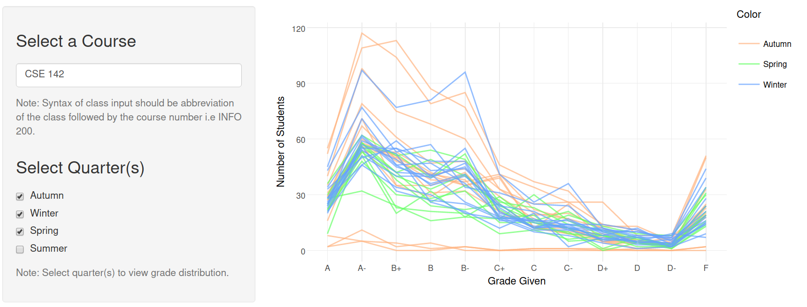

This was an end of course project that I worked with a team on for Info 201 (Technical Foundations). Using a dataset comprised of the anonymized grade data from every class taught at the University of Washington (Seattle) from Autumn 2010 to Winter 2016, we built an interactive web application. To manipulate the (relatively large ~40,000 lines, 20 features) dataset I used R to wrangle and filter the data into subsets that could be visualized. We used Shiny to create a reactive user interface that allows the user to filter the data for a specific class and display interactive visualizations.
Motivations
When deciding what kind of dataset to tackle, we came to the conclusion that we wanted to work with a dataset that would be relevant to current University of Washington students. After searching around we stumbled upon this particular dataset and were intrigued. It was relevant (because who wants to take a class with an unnecessarily tough teacher) and it was more than complex enough. Specifically, we were most interested in the distribution and breakdown of the letter grades within each class. The data is anonymized and could be manipulated to highlight features that are important to current UW students.
How We Built It
To manipulate the data I used the excellent dplyr package which was nested inside a Shiny reactive function. This allowed user inputs to filter the data on the fly. Changing the dataset dynamically based on user input and then displaying it over on the UI turned out to be tougher than I expected but this was the code that got it to work.
# initalize Shiny text input widget
output$value <- renderPrint({ input$text })
# Reactive function that wrangles the dataset based on the user input from the widget
datasetInput <- reactive({
# filters the data using dplyr based on the input text
trimmed.course <- filter(gpa, Class == toupper(input$text))
return trimmed.course
})
This returns a dataframe that can be passed into a render function on the server side: output$plot <- renderPlotly({ggplotly(datasetInput())}) and then
passed into an output over in the UI.
To build the plot I used the plotly library which does a great job of creating beautiful interactive visualizations. We set up a Shiny server thanks to the free hosting that they offer so that anyone with an internet connection can take a look at what we made. You can check the site here and the source here.
